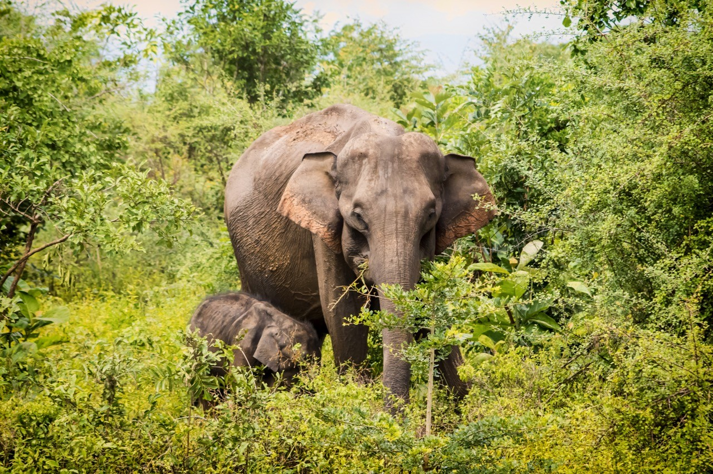

Protected Areas Gallery

Willpattu National Park

National Park

Minneriya National Park

Department of Wildlife Conservation is a government agency in Sri Lanka responsible for the conservation and
management of the country's wildlife resources.
It was established in 1949 and is responsible for the implementation of wildlife conservation policies, laws,
and regulations.
The department manages national parks, wildlife reserves, and sanctuaries, and is also involved in research,
education, and awareness-raising activities.
The department works to protect and conserve Sri Lanka's rich biodiversity, including its many endemic species,
and to mitigate human-wildlife conflicts.